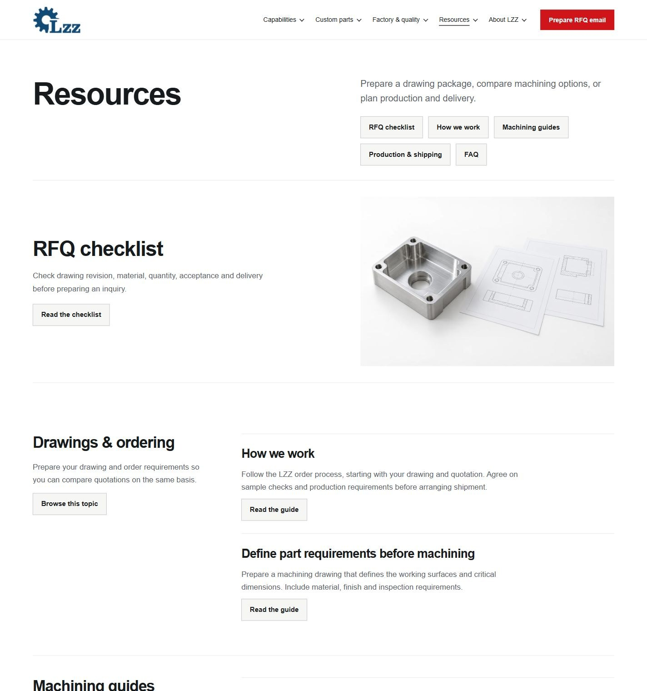
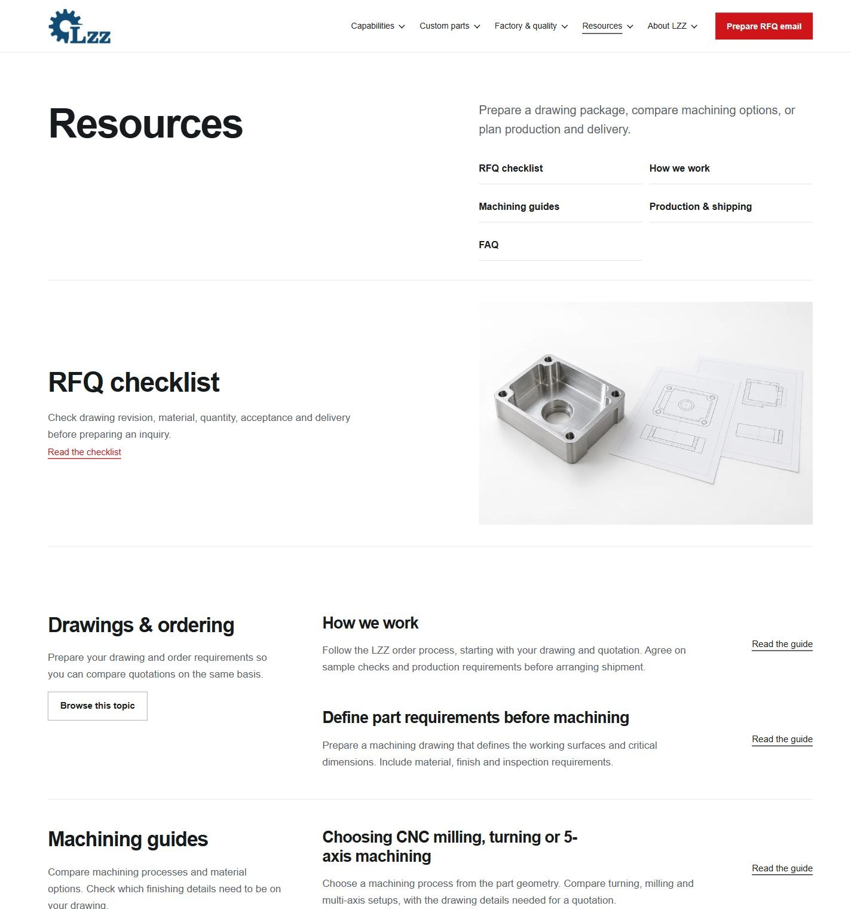
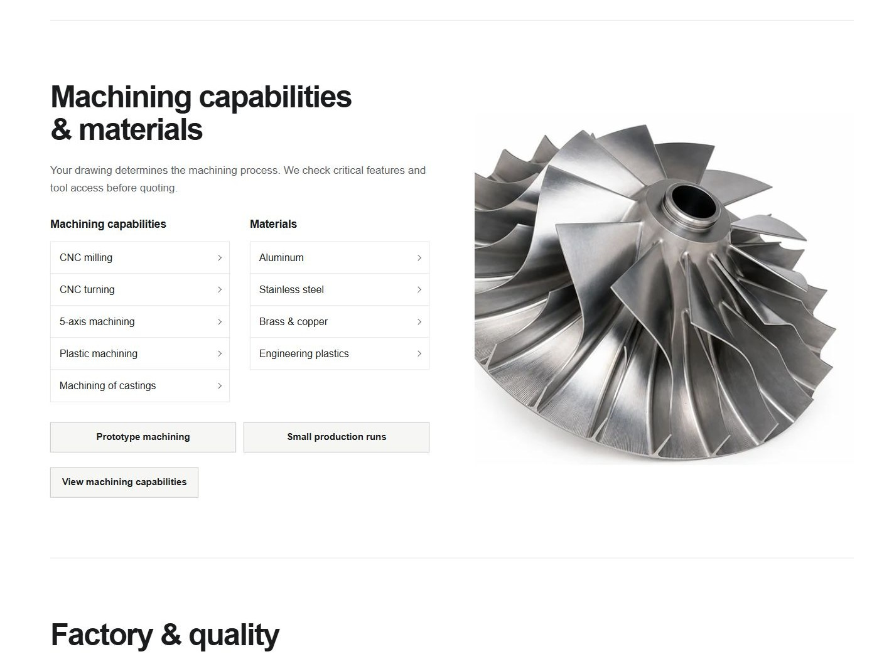
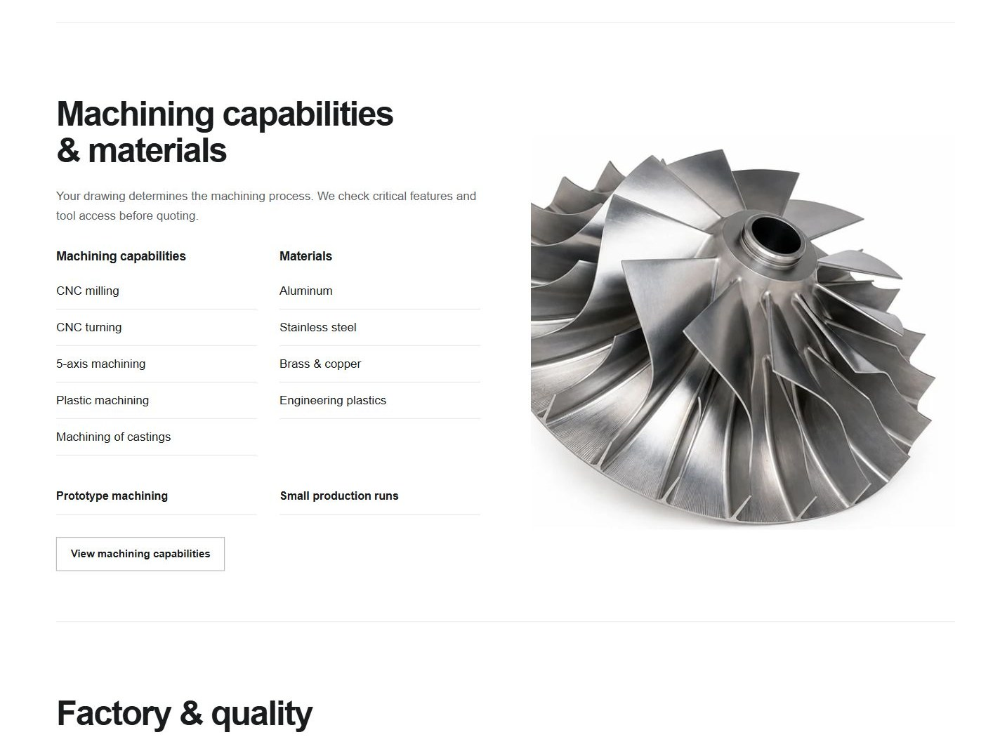
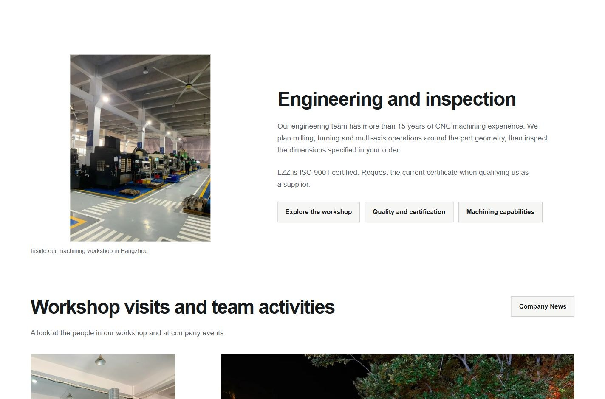
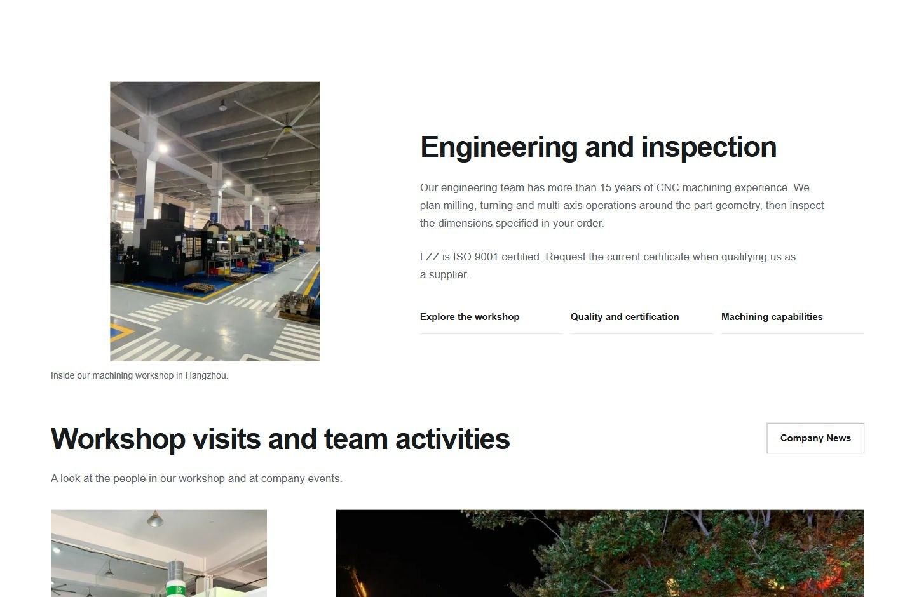
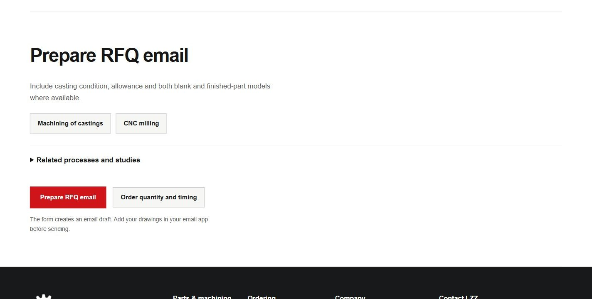
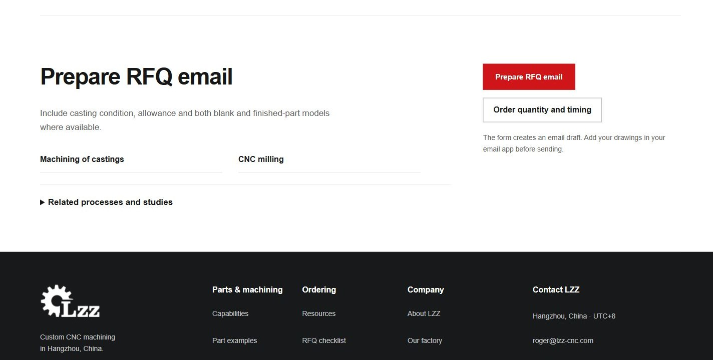

点击截图可查看原尺寸。截图用于效果比较，页面交互请通过“打开当前页面”体验。
Resources：目录与阅读入口
打开当前页面主题目录改为开放行列，文章入口使用阅读链接，避免连续灰色按钮抢占正文。


首页：能力与材料入口
打开当前页面去掉列表周围的重复框线与小折角，以两组标题和细分隔线组织工艺、材料及采购阶段。


About：相关页面衔接
打开当前页面相关页面合为同一组轻量入口。组内保持紧凑，章节之间留出更明确的停顿。


产品页：采购要求与询价收尾
打开当前页面桌面将采购要求与询价动作并列，邮件草稿提示紧随按钮；手机按内容、资料、询价顺序阅读。

